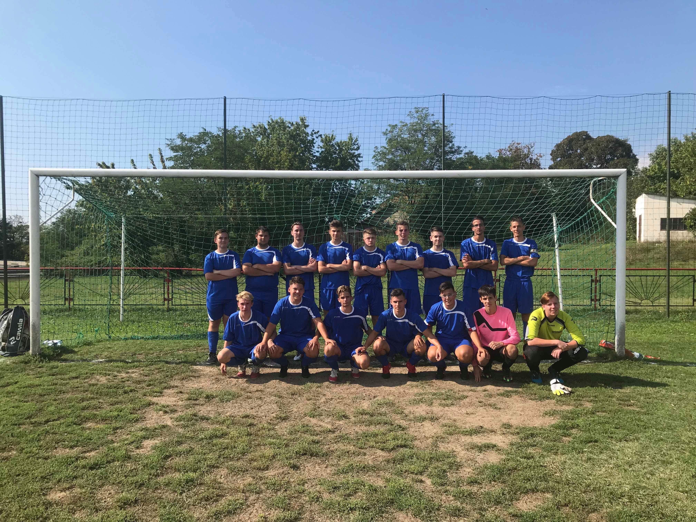
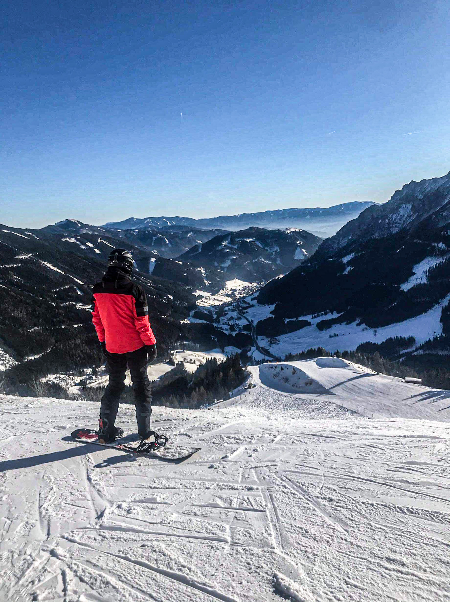

Tanulmányaimat a Petőfi Sándor Baptista Általános Iskolában kezdtem Petőfibányán. Ebben a 8 évben szinte minden alkalommal sikerült kitűnő bizonyítványt összehoznom, továbbá ebben az időszakban kezdett el formálódni érdeklődési köröm a természettudományok irányába és derült ki, hogy erőssen real beállítottságú vagyok. Iskolámat szinte az összes természettudományos versenyen képviseltem, azonban elsősorban matematikából. Legbüszkébb a 6. osztályos Mozaik Matematika versenyre vagyok, ahol sikerült bejutnom az országos döntőbe és ott 13. helyezést elérni. Ebben az időben alakult ki szenvedélyem a labdarúgás iránt is. A helyi csapat tagjaként rendszeresen jártunk tornákra és bajnokságban is indultunk. A labdarúgás mellett ebben az időben volt alkalmam először eljutni síelni amit azóta már snowboard-ra cseréltem, ami kedvenc időtöltéseim közé tartozik a mai napig is. A középiskolai tanulmányaimat a Hatvani Bajza József Gimnázium matematika-fizika tagozatán kezdtem meg, majd ezt a fakultációt is választottam. Rendkívül szép eredményeket értem el itt elsősorban a real tárgyakban. Matematika és fizika versenyeken szinte az összesen képviselni tudtam iskolámat, emellett az iskolai csapat tagjaként sporteseményeken is résztvehettem. Az itt elvégzett munka kifizetődő volt ugyanis kiváló érettségivel felvételt nyertem az ország legjobb műszaki egyetemére a Budapesti Műszaki és Gazdaságtudományi Egyetemre. Jelenleg itt folytatom tanulmányaimat gépészmérnök alapszakon.
Kompetenciáim:
Nyelvismeret:
- Angol nyelvből B2 komplex általános nyelvvizsga
- alapszintű német nyelvtudás
Számítógépes ismeretek:
- ECDL vizsga: Szövegszerkesztés, Táblázatkezelés, Adatbázis-kezelés, Prezentáció, Számítógépes alapismeretek, IT biztonság, Online alapismeretek
- SolidWorks alapszintű ismerete
- C# programozási nyelv alapszintű ismerete
Erősségeim:
- Matematika emeltszintű ismerete
- Fizika emeltszintű ismerete
- Kémia középszintű ismerete
Készségek:
- Kritikák, vélemények elfogadása
- Csapatos munkavégzés
- Pontos, precíz munka
- Időre befejezett feladat
- Fejlődés vágy
Szabadidős tevékenységek
11 éve szerettem bele a labdarúgásba és szabadidőmben nagyon szívesen űzöm barátaimmal annak ellenére is, hogy egyesületi szintű sportolásra sajnos nincsen időm. A snowboardozás a másik kedvenc elfoglaltságom és ha időm engedi igyekszem minden télen legalább egyszer eljutni egy nagyobb páyarendszerhez és ott egy pár napot eltölteni.
 